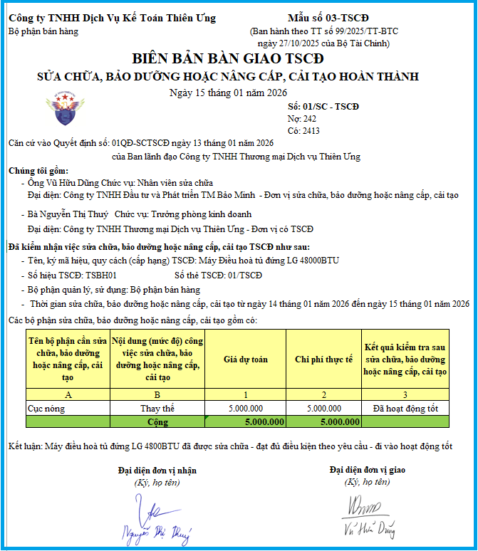

Mẫu số 03 - TSCĐ là Biên bản bàn giao TSCĐ sửa chữa, bảo dưỡng hoặc nâng cấp, cải tạo hoàn thành theo Thông tư số 99/2025/TT-BTC có hiệu lực từ ngày 01/01/2026 (Thay thế Mẫu số 01 - TSCĐ theo Thông tư 200)
Mẫu số 03 - TSCĐ theo Thông tư số 99/2025/TT-BTC là chứng từ kế toán dùng để xác nhận việc bàn giao TSCĐ sau khi hoàn thành việc sửa chữa, bảo dưỡng hoặc nâng cấp, cải tạo giữa bên có TSCĐ sửa chữa, bảo dưỡng hoặc nâng cấp, cải tạo và bên thực hiện việc sửa chữa, bảo dưỡng hoặc nâng cấp, cải tạo. Là căn cứ ghi sổ kế toán và thanh toán chi phí sửa chữa, bảo dưỡng hoặc nâng cấp, cải tạo TSCĐ.
1. Mẫu số 03 - TSCĐ theo Thông tư số 99/2025/TT-BTC
BIÊN BẢN BÀN GIAO TSCĐ
SỬA CHỮA, BẢO DƯỠNG HOẶC NÂNG CẤP, CẢI TẠO HOÀN THÀNH Ngày 15 tháng 09 năm 2026
Số: ……………..
Nợ: …………….. Có: …………….. Căn cứ Quyết định số: …………ngày 15 tháng 09 năm 2026 của .................................... Chúng tôi gồm: - Ông /Bà …..…….. Chức vụ ……….. Đại diện ………….. đơn vị sửa chữa, bảo dưỡng hoặc nâng cấp, cải tạo - Ông /Bà ………….Chức vụ ……….. Đại diện …………… đơn vị có TSCĐ. Đã kiểm nhận việc sửa chữa, bảo dưỡng hoặc nâng cấp, cải tạo TSCĐ như sau: - Tên, ký mã hiệu, quy cách (cấp hạng) TSCĐ .................................................... - Số hiệu TSCĐ .............................. Số thẻ TSCĐ: ............................................... - Bộ phận quản lý, sử dụng: .................................................................................. - Thời gian sửa chữa, bảo dưỡng hoặc nâng cấp, cải tạo từ ngày 15 tháng 09 năm 2026 đến ngày 15 tháng 09 năm 2026 Các bộ phận sửa chữa, bảo dưỡng hoặc nâng cấp, cải tạo gồm có:
Kết luận: ..................................................................................................................... ...................................................................................................................................
|
Ghi chú: Tùy theo đặc điểm hoạt động sản xuất kinh doanh và yêu cầu quản lý của đơn vị mình, doanh nghiệp được xây dựng, thiết kế biểu mẫu chứng từ kế toán.
2. Biên bản bàn giao TSCĐ sửa chữa, bảo dưỡng hoặc nâng cấp, cải tạo hoàn thành trên Excel:

3. Cách lập Mẫu số 03 - TSCĐ theo Thông tư số 99/2025/TT-BTC
Góc trên bên trái của Biên bản bàn giao TSCĐ sửa chữa, bảo dưỡng hoặc nâng cấp, cải tạo hoàn thành ghi rõ tên đơn vị (hoặc đóng dấu đơn vị), bộ phận sử dụng. Khi có TSCĐ sửa chữa, bảo dưỡng hoặc nâng cấp, cải tạo hoàn thành phải tiến hành lập Ban giao nhận gồm đại diện bên thực hiện việc sửa chữa, bảo dưỡng hoặc nâng cấp, cải tạo và đại diện bên có TSCĐ sửa chữa, bảo dưỡng hoặc nâng cấp, cải tạo.
Biên bản bàn giao TSCĐ sửa chữa, bảo dưỡng hoặc nâng cấp, cải tạo hoàn thành gồm 2 phần chính:
1 - Ghi tên, ký hiệu, số hiệu TSCĐ sửa chữa, bảo dưỡng hoặc nâng cấp, cải tạo.
Nơi quản lý sử dụng TSCĐ và ghi rõ thời gian bắt đầu sửa chữa, bảo dưỡng hoặc nâng cấp, cải tạo và hoàn thành việc sửa chữa, bảo dưỡng hoặc nâng cấp, cải tạo TSCĐ
2 - Các bộ phận sửa chữa, bảo dương hoặc nâng cấp, cải tạo.
Cột A: Ghi rõ tên của bộ phận cần phải sửa chữa, bảo dưỡng hoặc nâng cấp, cải tạo của TSCĐ.
Cột B: Ghi nội dung (mức độ) của công việc sửa chữa, bảo dưỡng hoặc nâng cấp, cải tạo như: Thay thế mới hoặc sửa chữa, tân trang lại v.v...
Cột 1: Ghi giá dự toán (giá kế hoạch) (đối với trường hợp đơn vị tự làm) hoặc giá hợp đồng hai bên đã thoả thuận (đối với trường hợp thuê ngoài) của từng bộ phận cần sửa chữa, bảo dưỡng hoặc nâng cấp, cải tạo .
Cột 2: Ghi số chi phí thực tế đã chi cho từng bộ phận sửa chữa, bảo dưỡng hoặc nâng cấp, cải tạo (Đối với trường hợp đơn vị tự sửa chữa, bảo dưỡng hoặc nâng cấp, cải tạo).
Đối với trường hợp thuê ngoài sửa chữa, bảo dưỡng hoặc nâng cấp, cải tạo thì chỉ ghi vào cột này khi có sự thay đổi về giá cả (so với giá ghi theo hợp đồng) phát sinh trong quá trình sửa chữa, bảo dưỡng hoặc nâng cấp, cải tạo được bên có TSCĐ sửa chữa, bảo dưỡng hoặc nâng cấp, cải tạo chấp nhận thanh toán.
Cột 3: Ghi rõ kết quả kiểm tra của từng bộ phận sau khi đã sửa chữa, bảo dưỡng hoặc nâng cấp, cải tạo xong.
- Kết luận: Ghi ý kiến nhận xét tổng thể về việc sửa chữa, bảo dưỡng hoặc nâng cấp, cải tạo TSCĐ của Hội đồng giao nhận.
Biên bản giao nhận TSCĐ sửa chữa, bảo dưỡng hoặc nâng cấp, cải tạo hoàn thành lập thành 2 bản, đại diện đơn vị hai bên giao, nhận cùng ký và môi bên giữ một bản, lưu tại phòng kế toán.
--------------------------------------------
Các bạn muốn tải (download) Mẫu Biên bản bàn giao TSCĐ sửa chữa, bảo dưỡng hoặc nâng cấp, cải tạo hoàn thành bằng file Word hoặc trên file Excel theo Thông tư 99/2025/TT-BTC về để tham khảo và sử dụng thì có thể gửi mail về địa chỉ mail: ketoandieutam@gmail.com => Kế Toán Diệu Tâm sẽ gửi lại Mẫu Biên bản bàn giao TSCĐ sửa chữa, bảo dưỡng hoặc nâng cấp, cải tạo hoàn thành theo Thông tư 99/2025/TT-BTC bằng file Word hoặc file Excel này cho các bạn
--------------------------------------------